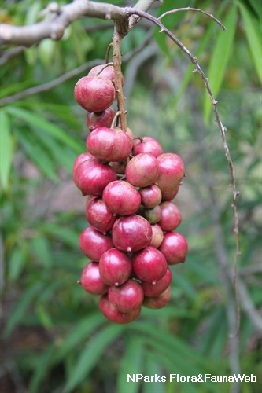

HELP US PROTECT MALAYSIA'S PLANTS
FloraDB is a citizen science project aimed at cataloging and identifying endangered, rare and threatened (ERT) plants in Malaysia.

Explorer
Explore our catalog of plants

Identify
Upload a photo of a plant and find out what it is

Contribute
Help us expand our catalog and improve our plant identification technology
Plant of the Day

Lepisanthes alata
A tree up to 10 m tall with leaves made of 8 to 12 leaflets. It bears round, purple berries about 2.5 cm wide that are edible. It grows in forests up to about 500 m and is found in Borneo, Peninsular Malaysia, Java and the Philippines.
Help us with your Plant Photos
Being a citizen science project, we rely on our contributors for valuable data points and insight.
If you're knowledgable about plants and want to help us, please take a look at our contribution form!
About us
We made FloraDB because we see the increasing impact of human activities in Malaysia on local biodiversity and want to do something about it. Our hope is that through citizen science, we will be able to better catalogue and identify endangered, rare and threatened (ERT) species and help protect Malaysia's biodiversity.
Check out our project members here